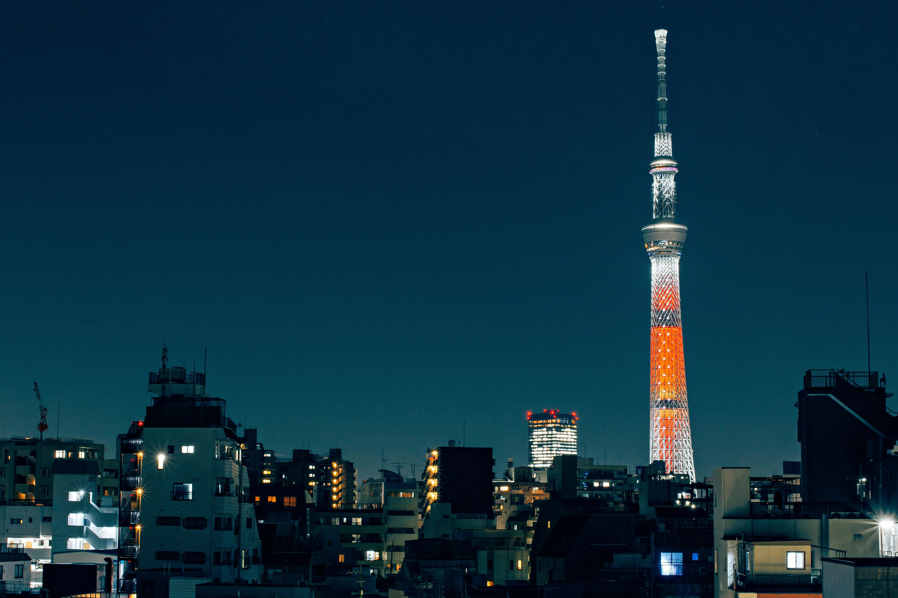

Nicknamed the "White Heron Castle," UNESCO World Heritage site Himeji Castle is considered the finest surviving example of prototypical Japanese castle architecture. Built in 1333, it is Japan's best-preserved original castle, having survived through wars, fires, and natural disasters. This 3D tour takes visitors inside of the castle, where they can see the building's layout.
Japan
Welcome to the Japan cultural tour. Here you will find immersive experiences of globally iconic landmarks as well as local culture.
3D Tour: Himeji Castle
Photo Gallery: Tokyo Skytree

The Tokyo Skytree is an observation tower in Tokyo that stands over 2,000 feet tall, making it the tallest structure in Japan. It offers beautiful panoramic views of the city, especially at night, when it is also enjoyable to look at from afar, thanks to it lighting up every night from sunset to midnight.
3D Tour: National Museum of Nature and Science
The National Museum of Nature and Science in Ueno, Tokyo is a museum primarily dedicated to animals, botany, geology, humanity, science, and engineering. It first opened in 1877 and has had several different names. It has over 5 million items in its collection, including the first phonograph introduced to Japan and the oldest existing seismograph in Japan.
Video: Tokyo Walking Tour
This video by HP Walking Tours shares a captioned walking tour of the city of Tokyo, passing through many iconic locations such as Shibuya, Akihabara, and the Sensō-ji temple.